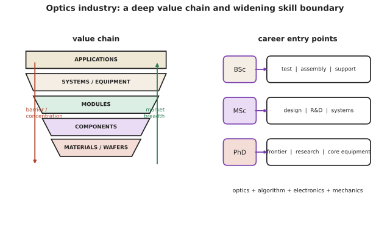

本页目录
前沿 III · 产业与职业路径
核对于 2026-07 ｜ 本页讲行业形态与人在其中的位置。 光电是一个分层极其分明的行业：底层是少数几家掌握核心材料与设备的公司，上层是数量庞大的系统与应用厂商。理解这个分层，才能理解岗位分布与职业路径。
学习层：职业选择不是产业链的单向爬楼梯
1. 具体谜题：同一个“光学岗位”，为什么入口和能力证据不同？
把光电产业粗分为材料/晶圆、元器件、模块、系统/设备、应用五层。用一个可复算的教学评分来表示三种约束：底层集中度 \(C\)、技术壁垒 \(B\)、市场宽度 \(W\) 和系统集成需求 \(I\)。例如材料层可记为 \((5,5,1,3)\)，应用层可记为 \((2,2,5,4)\)。你先猜：AI 数据中心互连最需要哪一层的系统判断？“会用 Zemax”是否足以证明能做光学设计？
2. 先预测：先选问题类型，再选学历入口
- 若目标是海底光缆可靠性，材料、模块、系统和应用哪个环节最可能成为验收瓶颈？
- 若目标是手机相机降成本，单项性能最强的岗位一定最有价值吗？
- 本科、硕士、博士是严格的能力高低排序，还是对应测试装调、研发系统、前沿器件等不同证据链？
3. 最小模型：用约束权重而不是名词做选择
对一个具体产品任务，先给出需求权重 \(w_C,w_B,w_W,w_I\)，再用
比较产业层的切入点。对个人，则把“能交付的证据”写成装调、测试、光学设计、算法、封装、控制和实验记录，而不是把职位名称当作能力。这个模型只用于暴露权重：它不声称衡量薪酬、公司利润或个人价值。
4. 实验：选择市场与能力轨道，查看缺口
先选数据中心互连、消费相机或医疗 OCT，再选本科实践、硕士研发或博士前沿/核心设备轨道。提交你预测的产业层与主要证据后，实验才展开层级 SVG、数值评分、推荐入口和“下一项可验证作品”。所有分数都是固定教学矩阵，便于复算和讨论。
无 JavaScript 时的静态读法：使用四维评分 \((C,B,W,I)\)，权重仅作选择练习，不是行业统计。
| 层 | \((C,B,W,I)\) | AI 数据中心互连的典型关注 | 常见入口证据 |
|---|---|---|---|
| 材料/晶圆 | \((5,5,1,3)\) | 供应、纯度、可靠性 | 工艺、材料表征、失效分析 |
| 元器件 | \((4,4,3,4)\) | 激光器、调制器、探测器 | 器件测试、版图、光谱与噪声 |
| 模块 | \((3,3,4,4)\) | 每比特功耗、封装、量产 | 调试、自动测试、良率与热 |
| 系统/设备 | \((3,4,4,5)\) | 链路、控制、校准、维护 | 系统设计、算法、机械/控制接口 |
| 应用 | \((2,2,5,4)\) | 场景成本、法规、交付 | 需求验证、现场实验、产品指标 |
若把数据中心任务权重取 \((1,2,3,5)\)，系统/设备层得分为 \(3+8+12+25=48\)，模块层为 \(3+6+12+20=41\)；这说明集成判断可能比单项器件峰值更接近任务瓶颈。
5. 失败边界：分层图不是职业命运图
- 集中度高不自动等于利润高；法规、资本周期、客户认证和供应链会改变真实回报。
- “会用软件”只是操作证据；可信的光学设计还需要像差平衡、公差、装调和实测闭环。
- 学历入口不是永久标签：本科生可以靠可靠的测试/工艺作品进入研发，博士也必须证明能把实验变成可交付系统。
6. 迁移任务：为下一个岗位建立证据链
从本课任选一个方向，写一页岗位作品说明：目标指标、物理模型、实验或仿真数据、失效边界、跨学科接口和下一步验证。分别为光学+算法、光学+半导体、光学+机械、光学+控制各写一个可在三个月内完成的最小项目。

一、产业分层
| 层 | 内容 | 特点 |
|---|---|---|
| 材料与晶圆 | 光学玻璃、III-V 外延片、非线性晶体、特种光纤预制棒 | 高壁垒、高集中度 |
| 元器件 | 激光器芯片、探测器、调制器、镜头、滤光片、光纤 | 技术密集 |
| 模块 | 光模块、相机模组、激光器整机、光引擎 | 规模化制造、成本竞争激烈 |
| 系统与设备 | 光刻机、显微镜、LiDAR、医疗影像、通信设备 | 系统集成能力是核心 |
| 应用 | 数据中心、汽车、消费电子、医疗、工业检测 | 需求驱动 |
一个结构性观察：越靠近底层（材料、核心元器件、精密设备），集中度越高、壁垒越深、利润越好；越靠近上层，竞争越激烈。这与 🔗 微电子站的产业结构极其相似——光刻机、高端光学玻璃、特种外延片都是少数玩家。
二、几个主要市场
① 光通信：数据中心互连是当前最大增长点。驱动力是 AI 集群的互连带宽与功耗（第十三页）。"每比特焦耳"成为核心指标，推动 CPO 与硅光。
② 消费电子光学：手机镜头模组、3D 感测、屏下光学。极致的成本与尺寸压力，是塑料非球面、超小型化技术的主要推动者。
③ 汽车：LiDAR、车载摄像头、HUD、照明（第十七页）。车规级的可靠性与温度要求远严于消费级，这是一个常被低估的门槛。
④ 半导体设备：光刻、量测（椭偏、干涉、缺陷检测）。光学精度要求的天花板（🔗 微电子站第十二页）。
⑤ 医疗与生命科学：内窥镜、OCT、显微镜、流式细胞、光声（🔗 生物站）。法规与临床验证周期长，但壁垒也因此高。
⑥ 工业与国防：激光加工、机器视觉、红外热像、测距。
⑦ 显示：面板与背光（第十六页），是规模最大但周期性极强的行业。
三、本硕博的实际去向
本科：掌握几何光学、波动光学、激光原理、光电探测基础，会用光学设计软件与实验仪器。
- 去向：光学工程师、光学设计（初级）、测试与验证、生产工艺、光模块调试、技术支持；
- 现实：不少岗位以装调、测试、工艺、品质为主，理论用得不深但需要扎实的实操。
硕士：进入某个专门方向。
- 去向：镜头/光学系统设计、激光器研发、光通信硬件、图像传感器与 ISP、LiDAR 算法与硬件、光学量测；
- 这是进入研发岗的主流门槛，尤其光学设计与激光器方向。
博士：极窄方向。
- 去向：企业研究院（硅光、超表面、量子）、高校、高端设备核心研发（光刻物镜、空间光学）。
几条业界观察：
- 光学设计师是稀缺工种：培养周期长（需要大量实际项目积累对像差平衡与公差的直觉，第二页），且难以被软件替代——与 🔗 微电子站的模拟设计师、机械站的资深结构工程师是同一类稀缺；
- "会用 Zemax" ≠ 会光学设计：与 🔗 机械站"会点 CAE ≠ 会判断结果可信度"完全同构；
- 装调与工艺工程师需求量大：光学系统的性能有相当部分是在装调环节实现的；
- 交叉能力最值钱：光学 + 算法（计算成像、ISP）、光学 + 半导体（硅光、传感器）、光学 + 机械（精密结构、热稳定）、光学 + 控制（自适应光学、扫描系统）；
- 实验能力被高度重视：能独立搭光路、对准、排查问题的人稀缺——这是讲义无法替代的部分。
四、这个学科的处境
优势：
- 需求持续增长：数据流量、自动驾驶、AI 算力互连、医疗影像都在拉动；
- 物理壁垒真实：光学的核心能力（设计、镀膜、加工、装调）积累周期长，不易被快速复制；
- 与多个热门方向天然交叉（AI、半导体、生物医学）。
挑战：
- 中间层竞争激烈：光模块、镜头模组等环节利润薄、周期性强；
- 高端设备与材料的壁垒同样意味着后来者难以进入；
- "光学 + 算法"的融合要求从业者扩展技能边界（第十一页计算成像）——只懂传统光学的空间在收窄。
一个判断：光电与微电子的边界正在模糊。硅光、图像传感器、CPO、片上光谱仪——这些方向要求同时理解光子与电子。未来最有价值的位置，可能正在这条边界上。
五、要点
- 产业分层明显：底层材料与设备壁垒高、集中度高；中间层竞争激烈；
- 数据中心互连是当前最大增长点，"每比特焦耳"是核心指标；
- 光学设计师稀缺且难被软件替代；"会用软件≠会设计"；
- 装调与实验能力被高度重视，是讲义替代不了的部分；
- 交叉能力（光学+算法/半导体/机械/控制）最值钱；
- 光电与微电子的边界正在模糊，这条边界上机会最多。
下一页：收官。把二十一页收拢成一个判断——光作为工具，究竟教会我们什么。